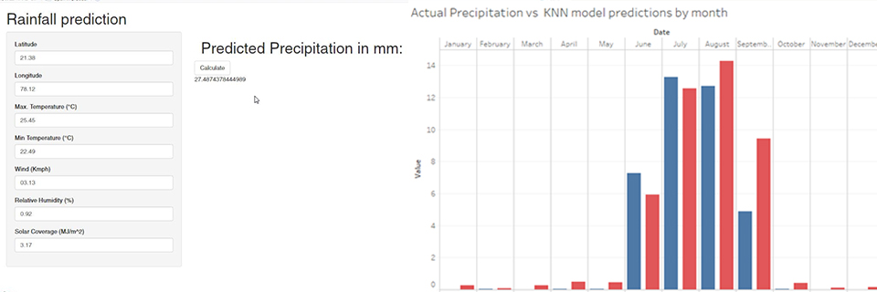
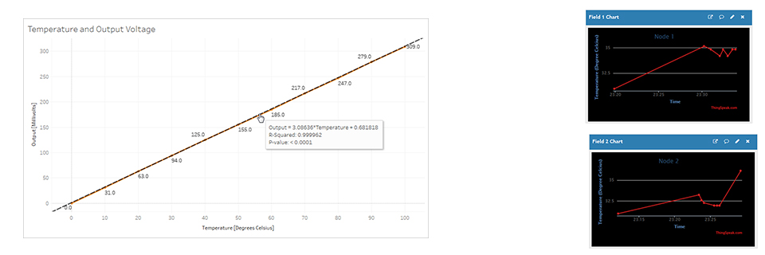
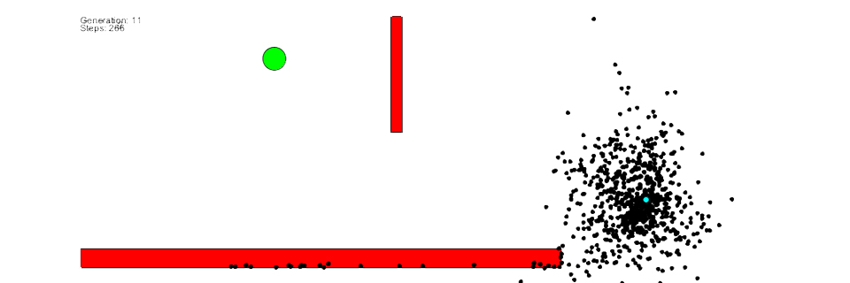
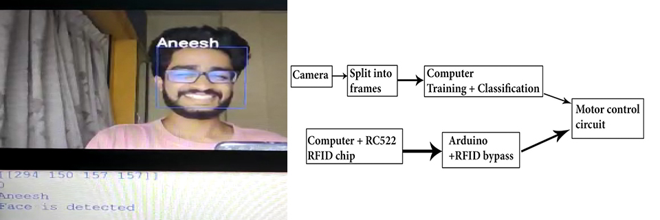
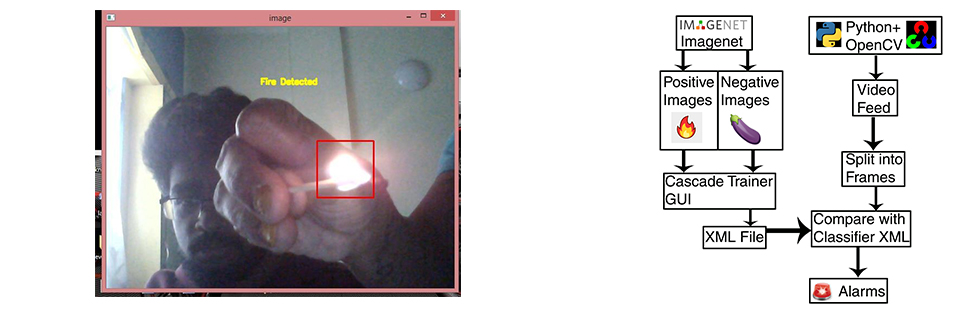
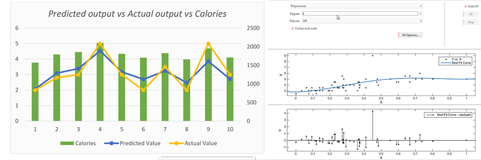
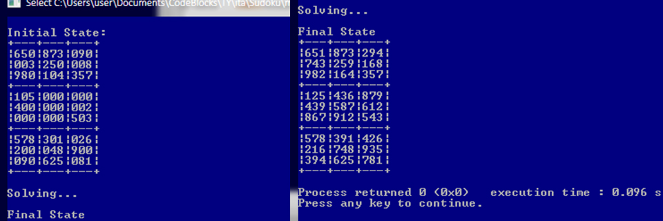
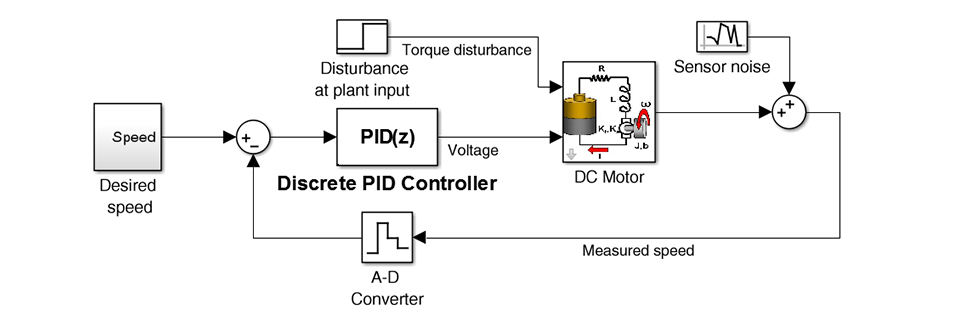
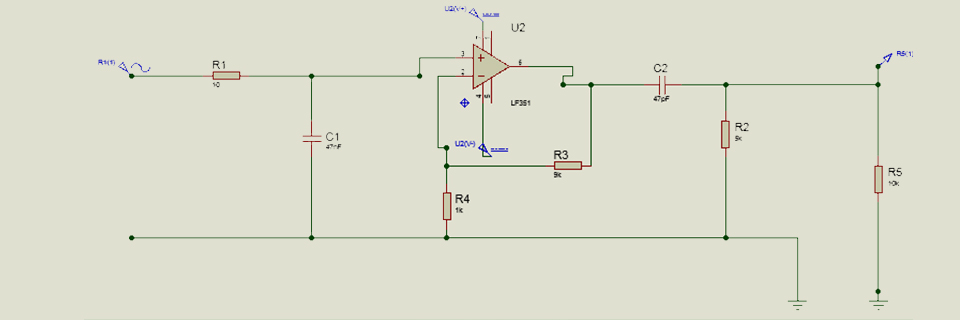
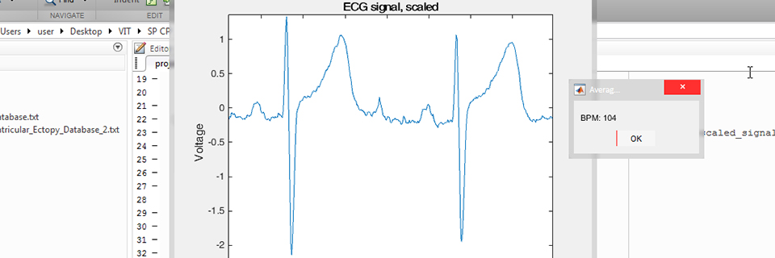

Projects
RAINFALL PREDICTION FOR THE STATE OF MAHARASHTRA
Apache Spark, R, MATLAB, Tableau
JAN’20- MAY’20
Generated a rainfall prediction model from a large (~ 3.6 million data points) dataset, accurate to within 2 mm using Apache Spark, integrated model into GUI application using R.
Created promotional poster and video for documentation.
WIRELESS SENSOR NETWORK FOR AGRICULTURAL APPLICATIONS
Tableau, Arduino, ThingSpeak
JAN’20- MAY’20
Calibrated sensors and derived voltage-temperature relationship using Tableau.
Programmed multiple Node Microcontroller units paired with individual temperature sensors to transmit temperature data from separate locations to a central ThingSpeak server.
Also created the circuit wiring diagrams and video for documentation.
DEMONSTRATION OF GENETIC ALGORITHM
Processing
AUG’19-DEC’19
Designed a scenario and wrote a program in processing which utilized a genetic algorithm to solve it.
This project was created with the goal of helping fellow peers and future students understand the concept.
FACIAL RECOGNITION SMART ELEVATOR SYSTEM
Python, Arduino
JAN’19-MAY’19
Conducted a survey on campus on the effectiveness of “elevator assistants” found across India.
Created a database of recognized faces and generated a corresponding .yml file.
Integrated database into a python program which processed video input, detects and recognizes faces.
Also implemented a demo elevator model using Arduino.
Published a research paper in an international journal.
Shot and edited video for documentation.
VISION BASED FIRE DETECTION SYSTEM
Python, Arduino
JAN’19-MAY’19
Created a database of multiple images of fire, generated an .xml file.
Integrated database into a python program which processed video and activated a sprinkler system.
Created a demo sprinkler model with an Arduino and relay circuit.
Shot and edited video for documentation.
STUDY ON DEGREE OF POLYNOMIAL MODEL FOR MOOD PREDICTION
MATLAB, Python
AUG’19-DEC’19
Collected calorie data using various fitness tracking apps.
Analyzed the fit of multiple models to this data using MATLAB curve fitting tool.
Integrated model into a python program to predict mood based on calorie burn.
SUDOKU SOLVER USING BACKTRACKING
C++
AUG’19-DEC’19
Wrote a program in C++ to solve a well-known puzzle using a new algorithm studied in class.
Included a demo program which pauses in between steps to demonstrate algorithm working.
DC MOTOR PID CONTROLLER
MATLAB Simulink, Proteus
JAN’19-MAY’19
Derived the transfer function of a DC motor system and a PID controller on paper.
Modeled the system and controller in MATLAB Simulink.
Conducted stability analysis in MATLAB.
Modeled and simulated the PID controller separately in Proteus.
BAND PASS FILTER FABRICATION
Proteus
AUG’18-DEC’18
Constructed model of band pass filter in Proteus.
Soldered components (through hole) on general PCB.
Tested and presented using laboratory equipment (oscilloscope).
ECG BASED HEART RATE CALCULATOR
MATLAB
AUG’18-DEC’18
Wrote a program in MATLAB to calculate heart rate by examining R-peaks in a given ECG signal.
Publications
- Sarthak Chudgar, Johnathan Fernandes, Aneesh Poduval. Smart elevator using facial recognition, International Journal of Advance Research, Ideas and Innovations in Technology.